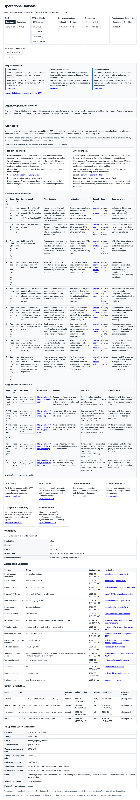
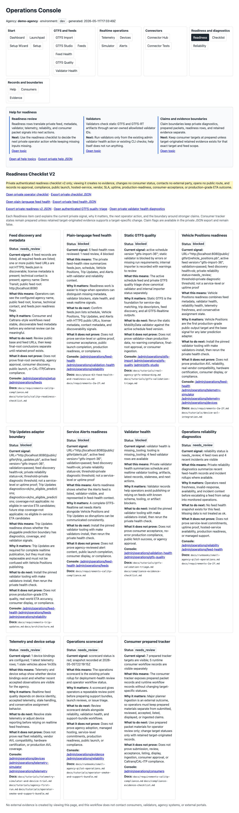
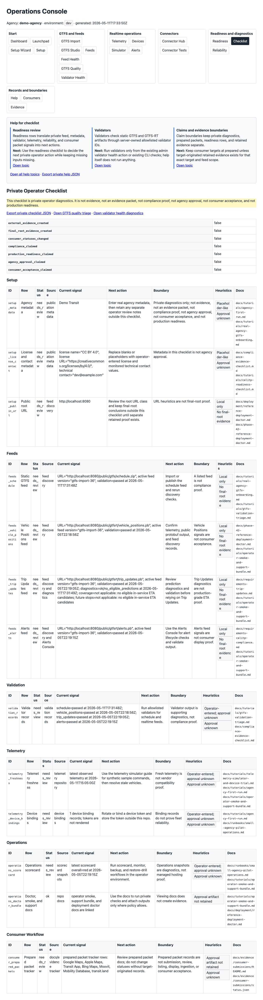
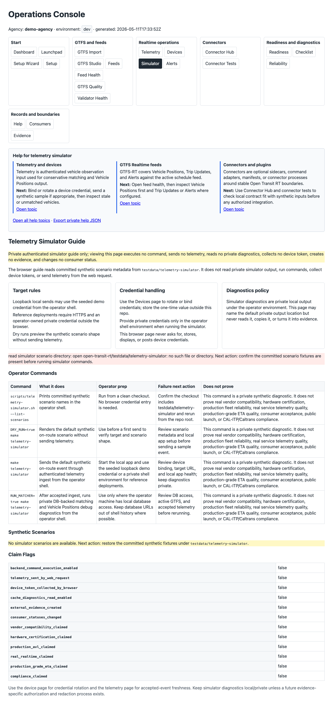

Operations Console overview
Local/demo product screenshot showing the private operator dashboard and navigation entry points.
Local/demo product screenshots
These screenshots are captured from the running local demo app and help readers recognize the private Operations Console surfaces. They are documentation aids only, not evidence.

Local/demo product screenshot showing the private operator dashboard and navigation entry points.

Local/demo product screenshot showing readiness rows, next actions, and claim-boundary context.

Local/demo product screenshot showing grouped setup, feed, telemetry, and diagnostics checks.

Local/demo product screenshot showing static GTFS diagnostics and operator-facing fix guidance.

Local/demo product screenshot showing private validator tooling and artifact health diagnostics.

Local/demo product screenshot showing committed synthetic scenarios and safe simulator command guidance.
These images are local/demo product documentation aids. They do not prove production readiness, CAL-ITP/Caltrans compliance, agency adoption or approval, consumer submission or acceptance, final-root readiness, hosted SaaS availability, SLA coverage, vendor compatibility, hardware certification, or production-grade ETA quality.